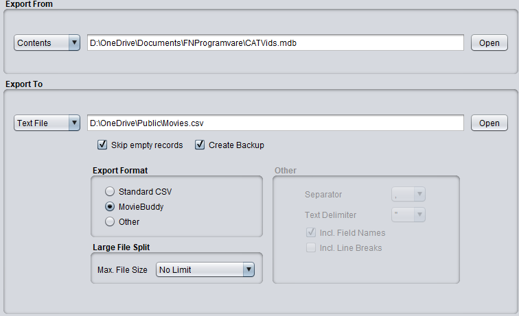
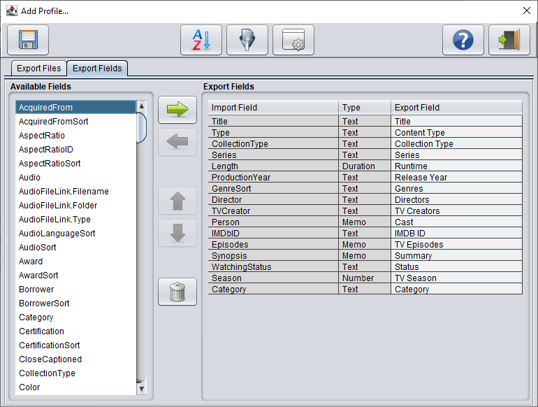
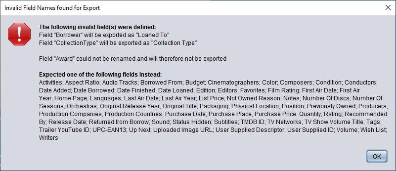

Export To MovieBuddy
If you have selected the Contents table in the CATVids database, you'll have an additional CSV format option
in the Texfile export to create a valid MovieBuddy import file. MovieBuddy is a powerful Movie and TV-Series
collecting app that runs on the Apple iPhone and iPad. It is developed by Kimico,Ltd.

Export Format
Here you can select the text format to export to.
- Standard CSV File
Creates a standard CSV File that can be imported directly in HanDBase,
JFile, SmartList to Go, MS-Excel or other program.
- MovieBuddy
Creates a MovieBuddy compatible CSV file.
- Other
Creates a delimited text file according to your own requirements.
Large File Split
Many import programs place a limit on the size of a texfile. Here you can define the maximum allowed
file size limit, so that FNProg2PDA splits the textfile into smaller pieces in case the export file
exceeds the file size limitation.
Other
The right part of the screen contains the options for setting up an export file to your own requirements
It contains of the following parts
- Field Separator
By selecting the field separator you can either create a Comma-, Tab- or Semicolon- or Pipe delimited file
- Text Delimiter
This specifies the text delimiter (to enclose all database fields).
- Include
Here you specify whether the first line of your file should contain the database field 'Headers' and
whether it is allowed that the export file contains line breaks (carriage return) characters.
Notes:
If MovieBuddy is selected then FNProg2PDA will preload the minimal required fields to be exported and
sort order (by Video Title, DiscNo., ReleaseNo and Episode).

Valid MovieBuddy fields:
Title, Original Title, TV Show Volume Title, Content Type, Collection Type, Series, Volume, Runtime,
Original Release Year, Release Year, Release Date, First Air Year, First Air Date, Last Air Year,
Last Air Date, Number Of Seasons, Genres, TV Creators, TV Networks, Directors, Composers, Orchestras,
Conductors, Writers, Cast, TV Episodes, Production Companies, Production Countries, Producers,
Cinematographers, Editors, Languages, Audio Tracks, Subtitles, Summary, Format, Edition, Film Rating,
List Price, Color, Packaging, Budget, Sound, Aspect Ratio, Number Of Discs, Home Page, IMDB ID,
UPC-EAN13, Trailer YouTube ID, Favorites, Rating, Physical Location, Status, Status Hidden,
Date Finished, Loaned To, Date Loaned, Borrowed From, Date Borrowed, Returned from Borrow,
Not Owned Reason, Quantity, Condition, Recommended By, Date Added, User Supplied ID, User Supplied Descriptor,
Tags, Purchase Date, Purchase Place, Purchase Price, Notes, TMDB ID, TV Season, Category, Wish List,
Previously Owned, Up Next, Position, Uploaded Image URL and Activities
If you would enter an invalid CATVids field then FNProg2PDA will try to match it with the corresponding
MovieBuddy field. If a match is found the field with be renamed. If no match is found the field will not be
exported. In both cases a similar screen like the one below will be shown.
